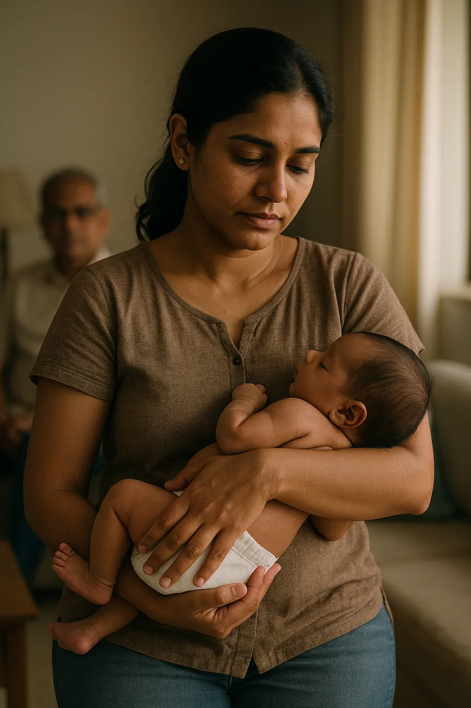
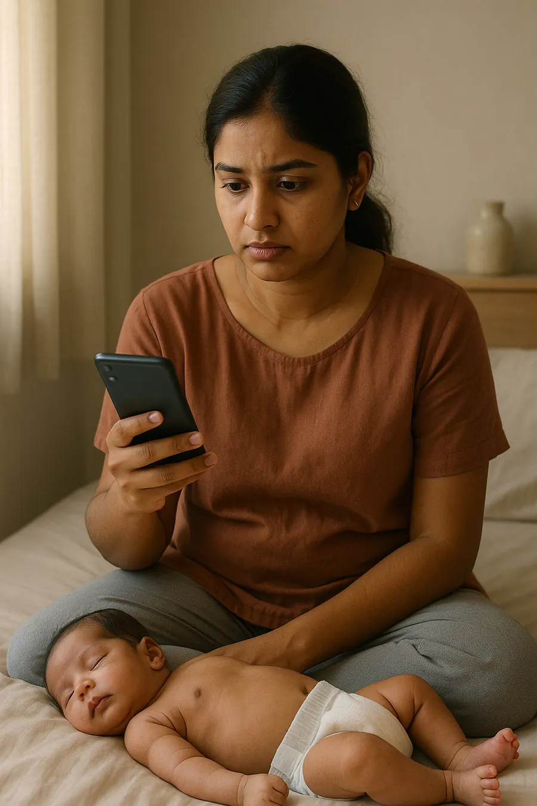
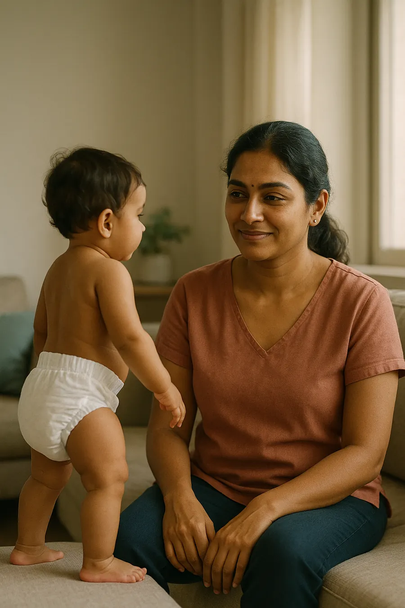
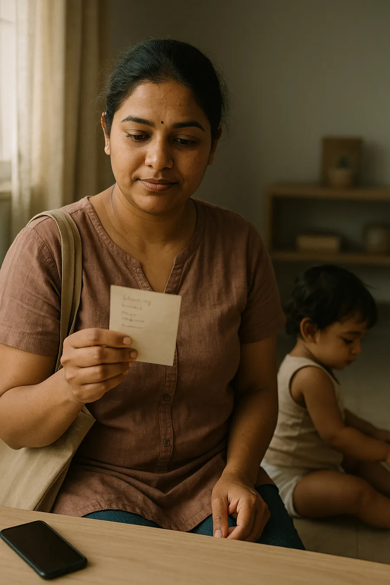
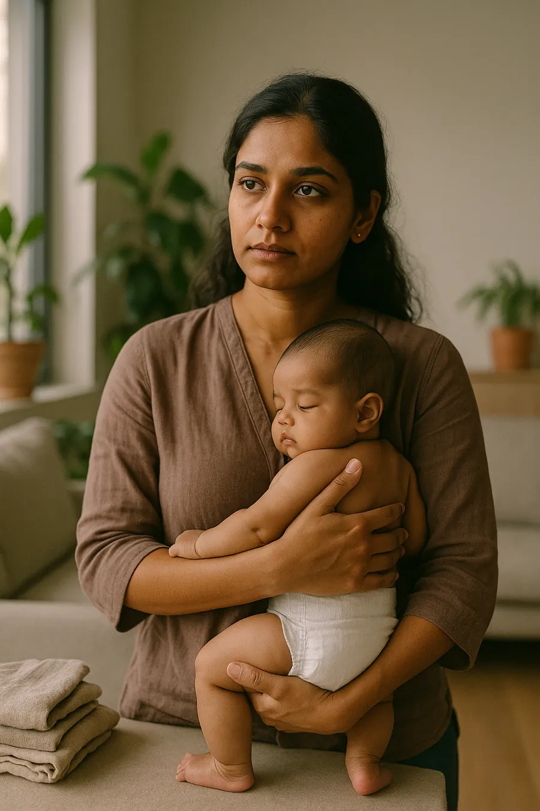

Each of the five personas is presented with a portrait, its percentage share of persona-coded voices, and a per-persona graph — a share bar plus a six-stage life-stage strip that visibly proves the "anxiety-releases-to-value as the baby ages" arc.
Five archetypes reveal how skin safety, value, and autonomy split the Indian diaper buyer.
Parents split less by income than by the baby's age and the mother's accumulated confidence. Skin-safety anxiety (external locus, premium spend) peaks at newborn, then releases toward value-optimising autonomy as she gains experience. Bubble & bar = share of persona-coded voices.
Positioning map — locus of control × price segment · labels = % of persona voices
Locus read from agency language ("I compared / switched" = internal · "doctor said / MIL insisted / whatever had good reviews" = external). Bubble size ∝ mention volume; label = share of persona-coded voices.
The archetypes — portrait · share · life-stage · drivers

① Premium Skin-Safety Seeker
PremiumExternal locusvs Huggies · Pampers
31.9%persona voices
Newborn
Infant
Crawler
Early tod
Mid tod
Late tod
Clusters at 0–8m — heritage & softness read as safety; any rash overrides loyalty.
Drives herSoftness / skin-contact quality · brand heritage as a safety signal · wetness indicator for responsive changing
Switches whenAny visible rash or peeling · MIL insists on a "proven" premium brand · hospital names a brand at birth
Unmet gapDerm-verified / clinically-proven rash-free claims · breathability proof for hot-humid climate · a trial-size SKU before bulk

② The Anxious First-Timer
Mid-premiumExternal locusswitched off Pampers
25.6%persona voices
Newborn
Infant
Crawler
Early tod
Mid tod
Late tod
Clusters at 0–8m — first-time, nuclear household, reads reviews obsessively, defers to paediatrician.
Drives herRash-safety reassurance above all · brand trust validated by review volume · overnight dryness for whole-family sleep
Switches whenBaby's first rash / redness → instant switch · paediatrician's first recommendation · high-rated "rash-free" reviews
Unmet gapCredible skin-safety proof beyond claims · size guidance for low-weight newborns · sample packs to trial before bulk

③ The Confident Optimizer
Mid-premiumInternal locusvs Supples
18.7%persona voices
Newborn
Infant
Crawler
Early tod
Mid tod
Late tod
Clusters at 8–18m — 2nd-time mom, compares on function, the segment's most vocal reviewer.
Drives herProven overnight absorption through crawl/walk stage · secure elastic fit during movement · value on large packs
Switches whenMobility milestone → tape-to-pant switch · performance dip after a size change · trusted peer recommendation
Unmet gapBatch-to-batch consistency on the same SKU · size-transition guidance · transparent ingredient disclosure

④ The Value-Rational Switcher
MassInternal locusvs Little Angels
15.2%persona voices
Newborn
Infant
Crawler
Early tod
Mid tod
Late tod
Clusters at 18–36m — anxieties resolved, optimises on per-diaper cost, deal-responsive.
Drives herLowest per-diaper cost with acceptable performance · large pack counts cut re-order frequency · rash-free (lower bar)
Switches whenPrice rise tips the cost-benefit · potty-training age cuts premium need · peer says a cheaper brand is "adequate"
Unmet gapConsistent fragrance-free formulation · better fit for heavier toddlers in value sizing · batch-quality consistency

⑤ The Conscious Hybrid User
PremiumInternal locuscloth + SuperBottoms
8.6%persona voices
Newborn
Infant
Crawler
Early tod
Mid tod
Late tod
Clusters at 3–12m — urban, often working; cloth by day, premium disposable for night & travel.
Drives herDiaper-free skin-air time as a principle · eco positioning as self-image · premium disposable as the night/travel safety net
Switches whenRash from extended disposable → cloth trial · influencer / YouTube review · travel & daycare convenience pulls back to disposable
Unmet gapReusables that hold heavy overnight output without bulk · travel-friendly premium pack sizes · monsoon wash-dry guidance
Emotional proof — advocacy vs failure (real corpus)
▲ Advocacy — Premium Skin-Safety Seeker
"…quality is very soft and velvety which leads to good and long sleep. My babies never get rashes… I love this brand very much and use to share with all my expecting mothers and new moms."
Flipkart · repeat premium user (Huggies) · 2nd-time mom
▼ Failure / switch — Confident Optimizer
"…the quality of the L size diapers is not up to the mark. It is getting heavy even after 2 hrs… leaked after 3 hrs… now I have to wake up and frequently change my baby's diapers."
Amazon · repeat buyer (Supples) · mother of 20-month baby
Persona read → Lovingle's beachhead is the upper-left cluster — the two biggest personas (Premium Skin-Safety Seeker 31.9% + Anxious First-Timer 25.6% = 57.5% of persona voices). Both are external-locus, both cluster at 0–8m, and both are gated by the same thing — credible rash-safety proof, not price. Win that trust signal and you take the highest-volume half of the market.
Bars & bubbles = share of the 2,035 persona-coded voices (of 31,600 corpus mentions, 13 platforms, 2023–2026; 78% coverage) — not % of the full corpus. Locus from agency-language coding. Below the confidence threshold and excluded honestly: father-as-buyer (28 recs), daycare-driven (7), grandmother / MIL as sole decider (2). Full drivers, triggers, unmet needs, SKU & channel per persona sit in the cards above.